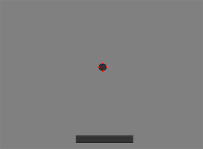
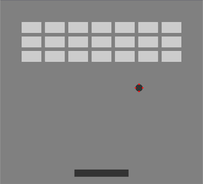
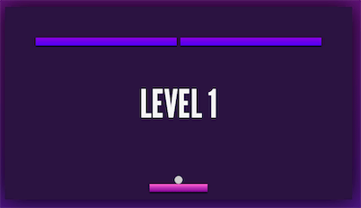

Breakout
The Project
As part of our coursework for Enspiral Dev Academy, one of our stretch material challenges was to play with JavaScript.
I decided that a breakout game was an achievable goal given a few days of work.
The Plan
My basic plan was simple.
- A ball that bounces around the screen.
- The paddle moves left and right depending on user input.
- Ball collision with the paddle.
- Ball collision with the bricks.
- Win and lose conditions.
- ..and if I have time, some styling and sounds.
Humble Beginnings

After a bit of work, I have a ball bouncing around the screen and a paddle.
I have a number of options at this stage. I could go the simple route and only check to see if the middle of the ball impacts with objects, but that just doesn't look right to me.
The radius of the ball will always appear to go into the object it was hitting.
I decided to go a step further and draw red boxes at 4 points around the ball. This way I can check to see if the top, bottom, left, or right of the ball impacts with any object, and do something when that happens.
I worked through a lot of problems I got stuck on here. Bugs like the ball getting stuck in walls of objects, and the wall of the screen.
Ordering of conditionals, and conditional hierarchy was important here.
I then moved on to the bricks.

I got stuck here for a while. I needed a sum that would calculate the canvas width, minus the brick padding and offset from the left, and divide this number into the amount of bricks I wanted to display.
I got there in the end.
Some added touches
At the moment the ball just bounces off the paddle in the opposite direction it came.
I wanted something different and a bit random to happen to make the game more interesting, so I decided to calculate a percentage from the centre of the paddle to the ends of the paddle where the ball hit, and bounce the ball in that direction plus that percentage.
This was fun to work out, and definitely made the game more interesting.
I also added a feature were the ball just didn't start moving when you started the game, but was stationary and stuck to the paddle, and required you to launch the ball with spacebar. This was also a fun feature and gave the player more control.
When the ball is launched, I gave the launch trajectory a random value, so it wasn't the same every time. This greatly increased the difficulty.
To further increase the difficulty, I made the ball velocity and paddle velocity increase with every level passed.
I also increased the amount of bricks with every level.
I recorded my voice and my daughters voice to add some sound effects when the ball was missed, or a level was passed. As well as some impact effects for the brick, paddle and walls.
I added some fade in and out text when a level was passed, the ball was missed, or the game was lost.
Finishing up
I learnt a lot about the power of creating small, single-use functions.
In the beginning, I was just adding functionality as I needed it, and it was getting very unwieldy by the time the code was greater than 400 lines.
I refactored the code into small functions, and clearly commented everything. Not only for myself, but if anyone else was to come across my code.
Because I was the only one that was going to work on the code, I did not commit my code as often as I should have. This came back to bite me as I worked on multiple features at once and forgot what I had and had not changed. This is something I need to improve in the future, whether I am the only one working on the code or not.
